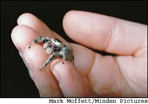
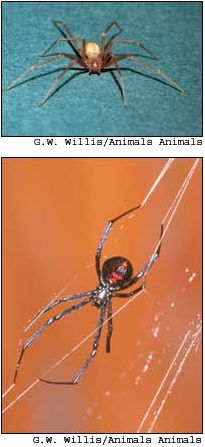
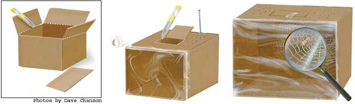

Pity the poor, deprived souls who think of nature as something to visit in a place defined by park borders or hiking trails. The average back yard, despite our best efforts to tame it, is a veritable jungle of extraordinary plants and animals - unseen and underappreciated for the most part, if only because we humans live our lives galumphing around on such long legs. But take the time to stop, kneel and peer into the smaller landscapes of our world, and you will discover whole universes.
This is precisely the quality that makes any person a naturalist - not formal education or scientific training (though they certainly are useful) but simply the ability to look at the world through a child’s wondering eyes.
Fortunately, I have two curious and inquisitive sons who have helped me retain my own particular (some might say peculiar) childlike sense of wonder. Over the past several years, they’ve regularly reminded me, for instance, that some of nature’s most interesting inhabitants live right under our noses - in the unnoticed corners and out-of-the-way crannies of our homes. There are the beetles in the basement and the occasional bat in the attic; the silverfish that skitter across the pages of old magazines; the Polistes wasps that build honeycomblike paper nests between the windows; the mouse that comes out at night in search of kitchen-floor crumbs. Add to those creatures the usual cavalcade of ants and flies, and it’s plain that the average home is not only where the heart is, but also where there’s an abundance of wildlife.
My favorite domestic denizens are spiders. In summer on the back porch, we sometimes find harmless and tiny but fierce-looking and beady-eyed jumping spiders - the Pekingese of the spider world. Move your hand toward one and it may well leap at you, not away, in a show of feigned aggression that has intimidated countless Homo sapiens. Jumping spiders don’t spin a web; they capture a meal by stalking their buggy prey and pouncing on it, like a cat.
Only a handful of spiders are actually dangerous to humans. Occasionally, in garden debris, I’ve run across a black widow, easily recognizable by its round, pea-size and polished ebony body and telltale red-marked underbelly (the marking is sometimes, but not always, hourglass-shaped). Named for the female’s alleged habit of eating the smaller male after mating, black widows are the most venomous spider in the United States. Fortunately, they prefer outdoor habitat.
The infamous brown recluse, on the other hand, not only lives outside in woodpiles and loose brush, but also indoors under furniture or in seldom-
visited corners of closets and attics. Also known as a “fiddleback” or “violin spider,” the half- to 1-inch-long recluse has a distinctive yellowish-orange head topped by a brown, violin-shaped marking. Both types of spiders bite only in self-defense, so I wear gloves when doing chores in likely spider territory such as the woodpile or the basement.
A more suitable sort of spider for casual study - and the type my sons and I are most fond of - are the everyday house spiders, more notoriously known as cobweb spiders. Actually, most cobweb weavers (there are some 200 different sorts in North America alone) spin their webs outside, in shrubs and grasses. But a few - the most common of which is the American house spider (Achaearanea tepidariorum) - prefer a home with a roof and walls. Their small bodies - bulbous and brown with black-and-gray splotches - are nothing special to look at, but you have to admire the little rascals for, if nothing else, their sheer industry.
At night, under cover of darkness, they emerge to build stringy, crisscrossed webs amid the angles of corners, floors, ceilings and woodwork. Like other arachnids, the house spider produces liquid silk in several glands, then draws it out through three to four pairs of spigotlike organs (called spinnerets) located in a cluster at the rear of its belly. The silk solidifies on contact with the air. A spider can produce different types of silk for different purposes - sticky, dry, thick, thin, elastic, rigid - depending on how it mixes and extrudes its internal chemicals.
Despite a random appearance, the web of a house spider actually is a well-constructed maze of silken guy lines pulled taut and firmly cemented to each other and to adjacent walls. Inner strands run every which way, creating a strong, sticky labyrinth from which few trapped insects ever escape. The spider spends most of its time hanging upside down on an extra layer of silk in the web, waiting patiently, usually near the center or off to one side. When an unsuspecting insect becomes entangled, the spider rushes to it, turns around and throws out a thick rope of silk to tie down the victim. Then the hunter bites, injecting a paralyzing toxin that ends the struggle for good.
At that point, the spider either hauls its catch back to its lair for later consumption, or eats it on the spot. Spider dining habits are decidedly gruesome - just the sort of thing we humans find endlessly fascinating. Instead of digesting its meal internally, a spider injects digestive juices into the victim’s body, then sucks up the liquefied flesh. Finally, probably not so much to tidy up as to keep its web invisible, the spider tosses out the shell and any remaining wings or legs.
Because cobwebs catch not only insects but also unsightly dust, they’re considered a nuisance and not something you want your in-laws to find when they come to visit. In 18th- and 19th-
century Europe, though, fresh cobwebs were once in great demand as bandages, for their ability to stem blood flow. In any event, you might want to consider leaving a spider (or two) with its web in your home, not just to help keep the fly, mosquito and moth populations down, but also because they’re fun to watch and study. You also could ..
This particular project is especially good for a rainy or snowbound day. It is just creepy enough to interest any bored child - and it gives everyone an opportunity to learn more about house spiders.
To make a spider box, find a cardboard box about 8 to 10 inches deep and wide. Cut off the top flaps so that one side is completely open. Then carefully tape over the bottom seams and any cracks around the edges. Turn the box on its side and, using a knife or the tip of scissors, cut a trap door: Make two parallel cuts 4 or 5 inches apart to make the door’s sides, then cut across the front and leave one edge uncut, to serve as a hinge. Use a nail to poke a few small holes for ventilation in the top, sides and back of the box. Now stretch plastic wrap tightly across the open side of the box and tape the edges of the “window” to the sides. The box is finished. Now all you need is a spider.
In winter, most homes have a resident house spider or two in a corner up near the ceiling, where it’s warm. That’s exactly the sort of harmless, web-spinning spider you want. (Don’t go looking in woodpiles or underneath objects, or you may encounter the sort of spider you don’t want!) Hold a sheet of paper under the spider and use a stick to gently pull the web onto the paper. Usually, the spider will drop down with the web or lower itself on a silken rope to the floor. If it falls to the floor, just put the paper down and let the spider crawl onto it. Then quickly move the paper to the box’s open trap door and shake the spider into the box. Close the door and “lock” it with a piece of tape.
The spider will begin building a new web almost immediately. My sons never tire of watching the process. They also like trying to identify the spider by looking in field guides. And they love to feed their eight-legged friend clothes moths (another form of wildlife all too common in our house) or other small, indoor insects. Spiders seem able to survive without much food. If we can’t find insects, though, we at least drop a moistened cotton ball into the box to provide a water source.
After a couple of weeks of watching, we let the spider go in the crawl space of our basement. Then it’s time to clean out the box (or make a new one) and search for another “pet.”
If spiders give you the creeps, you’re certainly not alone - most humans instinctively associate spiders with spider bites. (Go ahead and admit it: The last time you found an unexplained and itchy red spot, you thought it might be a spider bite.) But if spiders were out to get you, you’d be gotten by now. There are at least 30,000 spider species in the world, and some scientists estimate there are as many as 200,000. Spiders also occupy virtually every sort of habitat - from tropical jungles and arctic tundra to the nooks and crannies of your own abode. The truth of the matter is, in other words, they’re everywhere. Arachnologists estimate that at any given time 100 to 200 spiders live in an average house; about 10,000 spiders live in one acre of typical forest habitat; and between 1.5 and 2.5 million spiders can be found in an acre of grassland!
Most spider species are venomous, but in North America only a few - primarily the brown recluse, the black widow and the hobo spider of the Pacific Northwest - have the potential to inflict serious harm on humans. (Also, the yellow sac spider - a recently introduced species from Europe that’s becoming increasingly common in the eastern United States - can inflict a painful “hornetlike” bite that can be serious.) Meanwhile, billions of harmless spiders consume vast quantities of insects - serving as one of our planet’s most important pest controls. Still, poisonous spider bites are no laughing matter. Fortunately, they’re also easy to avoid. Just follow these common-sense rules:
• Be especially wary in little-used, undisturbed places such as basements, outbuildings, brush piles, crawl spaces, attics and closets. Look carefully before you reach into the back of that old dresser drawer!
• Shake blankets and towels that have been stored or piled for awhile. The same is true for rags, laundry, shoes or old clothing.
• Wear gloves, long pants and long sleeves when raking leaves, cleaning out a shed or basement, or fetching firewood from a woodpile. Knock one log against another before picking it up, and watch for any spider activity.
• Remove any litter or clutter in basements, attics, garages and sheds that might provide shelter for spiders.
If you think a spider has bitten you, apply an ice pack to the area for 15 to 20 minutes every hour for four to six hours to reduce the pain and itching. Over-the-counter anti-itch medications can help ease the symptoms, too. If you suspect you’ve been bitten by a poisonous spider, seek immediate medical attention.
But regardless of what level of arachnophobia you might or might not feel, you may as well go ahead and get to know the spiders that live all around you, especially those that share your home. Grab a field guide and poke around that habitat of yours. Once you start to look, every day is a nature-study day.
|
 MARK MOFFETT/MINDEN PICTURES The fierce-looking but harmless jumping spider. |
BOB & SUZANNE CLEMENZ Thousands of dewy spider webs at dawn in the White Mountains of Arizona. |
 G.W. WILLIS/ANIMALS ANIMALS Two dangerous spiders: The brown recluse (top most) prefers to lurk in the seldom- disturbed areas of homes, such as basements, closet corners and behind furniture. The female black widow (above) is perhaps the most harmful spider to humans. It prefers outdoor habitat under many kinds of debris, but also may come indoors. |
|
 DAVE CHANNON To witness up close the amazing art of cobweb building, cut the flaps off a box, poke holes for ventilation and cover one side with plastic wrap. |
|
|